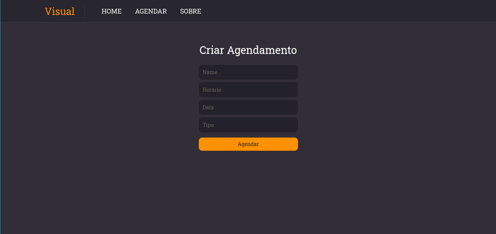
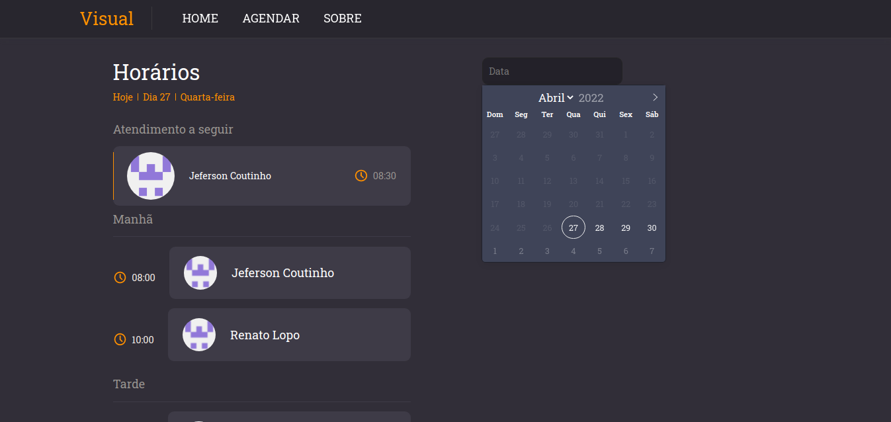

DESENVOLVIMENTO WEB
Este site foi desenvolvido como um trabalho para a disciplina de Desenvolvimento.
Alunos
Jeferson lopes Coutinho
Renato Lopo
Sobre site:
O Projeto tem com objetivo fazer o gerenciamento de agendamentos em uma Barbearia. Possibilitando fazer o cadastro de agendamentos e organizar por hora e data.
Páginas
Home:
Esta página mostra os agendamentos do dia atual separados por sessões. Também mostra o próximo cliente a ser atendido.
Nesta página também é possível ver os agendamentos futuros, basta selecionar a data no calendário
Agendar:
Na página Agendar é possível fazer os cadastros dos agendamentos
